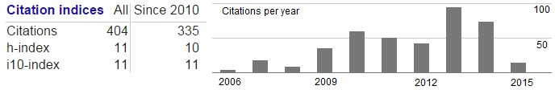
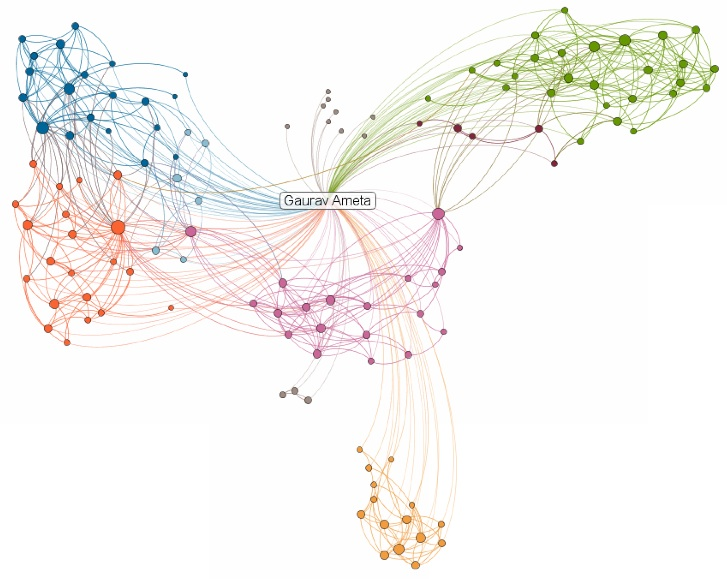

Education:
- Ph.D. in Mechanical Engineering, ASU, Tempe, AZ, USA, December 2006
- M.S. in Mechanical Engineering, ASU, Tempe, AZ, USA, May 2004
- B.E. in Mechanical Engineering, Bhilai Institute of Technulogy, Durg, CG, India, June 2001
Work Experience:
- Assistant Professor, WSU, Pullman, WA, USA, Aug 2008 - contd.
- Adjunct Professor, Grenoble-INP, Grenoble, France, Jan 2014 - contd.
- Guest Researcher, NIST, Gaithersburg, MD, USA Oct 2007-Aug 2008.
- Post Doctoral Research Associate, ASU, May 2007-Oct 2007
- Technical Research Associate, ASU, Feb 2007-May 2007
- Faculty Assistant, ASU, Dec 2006-Jan 2007
Research Interests:
- Environmentally benign design and manufacturing
- Sustainable and energy efficient product life cycle
- Tolerance analysis and allocation
- Geometric problems in design, manufacturing and inspection
- Product models and informatics
National & International Recognition:
Member of Standards Committee on Tolerancing for Additive Manufacturing (ASME Y14.46) since Dec 2014.
Chair of the Computer Aided Product and Process Design Committee in the Computers and Information in Engineering Division (CIE) of ASME (2013-2014).
Member of the International Scientific Committee for the CIRP Computer Aided Tolerancing Conference (2011-onwards).
Young Engineer 2011 Award from ASME’s Computers and Information in Engineering Division at the 31st Computers and Information in Engineering Conference (IDETC) in Washington, DC, USA, Aug 28-31, 2011
Best Paper Award for the paper titled Worst-Case Tolerance Analysis of a Self-Aligning Coupling Assembly using Tolerance-Maps in the 11th CIRP Int'l Seminar on CAT, March 22-23, 2009, Annecy, France.
CIE Poster Award for the poster 'Srinivasan R., Hu Yang and Ameta G., "Poster:Estimating Selective Disassembly Time using Disassembly Graph based on Connective Complexity Metrics", International Design Engineering Technical Conference-2012/ Computers and Information in Engineering, Chicago, IL, USA, Aug 11 - 14, 2012.'
Selected Publications:
Click here for current Google Scholar Citations
Snapshot of citations from Jan 2015

Huang H. and Ameta G., "Computational energy estimation tools for machining operations during preliminary design", International Journal of Sustainable Engineering, Taylor and Francis, 7(2), pp 130-143
Huang H. and Ameta G., "A Novel Pattern for Energy Estimation Framework and Tools to Compute Energy Consumption in Product Life Cycle", Journal of Computing and Information Science in Engineering, ASME Transactions, March 2014, 14(1), 12 pages
Mani M., Johansson B., Lyons K., Sriram R.D. and Ameta G., “Modeling, Simulation and Analysis for Sustainable Product Realization”, International Journal of Life Cycle Assessment, Vol. 18(5), June 2013, pp 1129-1136.
Singh G., Ameta G., Davidson J.K., and Shah J.J., "Tolerance Analysis of a Self-Aligning Coupling Assembly using Tolerance-Maps in Design", Vol 135(3), Journal of Mechanical Design, March 2013, 14pp.
Ameta G., "Establishing the Energy Profile for Geometric Variations of a Planar Surface", Procedia CIRP, Elsevier, Vol. 10, pp 294-298.
Ameta G., Samper S. and Giordano M., "Comparison of Spatial Math Models for Tolerance Analysis: Tolerance-Maps, Deviation Domain, and TTRS", Journal of Computing and Information Science in Engineering, Vol. 11(2), 021004, 8pp, 2011.
Ameta G., Davidson J.K., and Shah J.J., "Effects of Size, Orientation, and Form Tolerances on the Frequency Distributions of clearance between two planar faces", Journal of Computing and Information Science in Engineering, Vol. 11(1), 011002, 10pp, 2011, Journal's Impact factor -0.784
Ameta G., Rachuri S., Fiorentini X., Mani M., Fenves S. J., Lyons K., and Sriram R., "Extending the notion of quality from physical metrology to information and sustainability", Journal of Intelligent Manufacturing, Vol. 22(5), pp737-750, 2011, Journals Impact factor -0.972
Ameta G., Panchal J. and Pezeshki C., "A Collective-Learning Approach to Sustainable Design Education", International Journal of Engineering Education, Vol 26(2), pp 265-270, 2010. Journal's impact factor - 0.751
Complete publication list available at this link. In (50+ publications) total 20 Journal papers, 25 conference papers, 6 book chapters, 11 posters, 3 reports, MS Thesis and Ph.D. Dissertation.
Courses Taught:
- Washington State University
- ME 212: Dynamics (Summer 2013).
- ME 310/311: Introduction to Manufacturing Processes (Fall 2009, Spring 2010, Summer 2010, Fall 2010, Spring 2011, Spring 2014)
- ME 316: Systems Design (Fall 2008, Spring 2009, Fall 2011, Spring 2012, Fall 2012, Spring 2013, Fall 2013, Spring 2014)
- ME 473: Advanced CAD and Geometric Modelling (Spring 2011, Spring 2013)
- ME 502/579: Sustainability Assessment for Engineering Design (Fall 2010, Fall 2012)
- ME 574: Foundations of CAD (Spring 2012)
- Arizona State University
- MAE 214: Computer-Aided Engineering (Winter 2006)
Graduate Students Advised/Advising
- He Huang, Ph.D, Graduated Spring 2012
- Amaninder Gill, M.S., Graduation Spring 2014
- Arvind Shankar, M.S., Graduated Fall 2013
- Yang Hu, M.S., Graduated Summer 2013
- Raghunathan Srinivasan, M.S, Graduated Fall 2011
- Martin Baker, M.S. (Non-Thesis), Graduated Spring 2013
- Mohammed Anazi, M.S. (Non-Thesis), Graduated Spring 2012
- Yang Hu, Ph.D., Expected Graduation Fall 2015
Invited/Guest Presentations
- National Institute of Standards and Technology, Gaithersburg, MD
- Engineering Lab Seminar: Tolerance Analysis - July 2012
- Seminar: Composite Modeling and Standards Landscape - Aug 2012
- MSID Seminar: Tolerance Modeling with T-Maps - Feb 2008
- University of Nebraska, Lincoln, NE
- Graduate Seminar: Recent Advaces in Sustainable Design - March 2012
- Washington State University, Pullman, WA
- Carbon Weight Tolerancing Methodology - Nov 2008
- Sustainable design in Mechanical Engineering - March 2009
- Arizona State University, Tempe, AZ
- Statistical Tolerance Analysis - Fall 2006
My Linkedin Network

Graduate Students
|
|
Undergraduate Students
None
Gaurav Ameta

-Director and founder of Sustainable Product Lifecycle Lab,
-Chair of the Computer Aided Product and Process Design Committee in Computers and Information in Engineering (CIE) Division of ASME, 2013-14
-Assistant Professor in School of Mechanical and Materials Engineering
-Adjunct Professor, Grenoble - INP, France